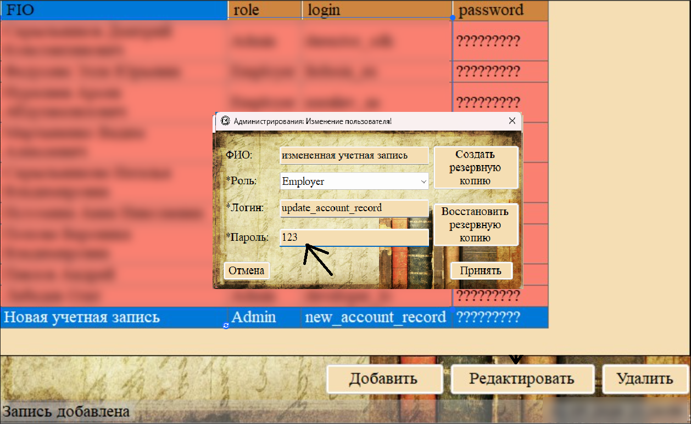
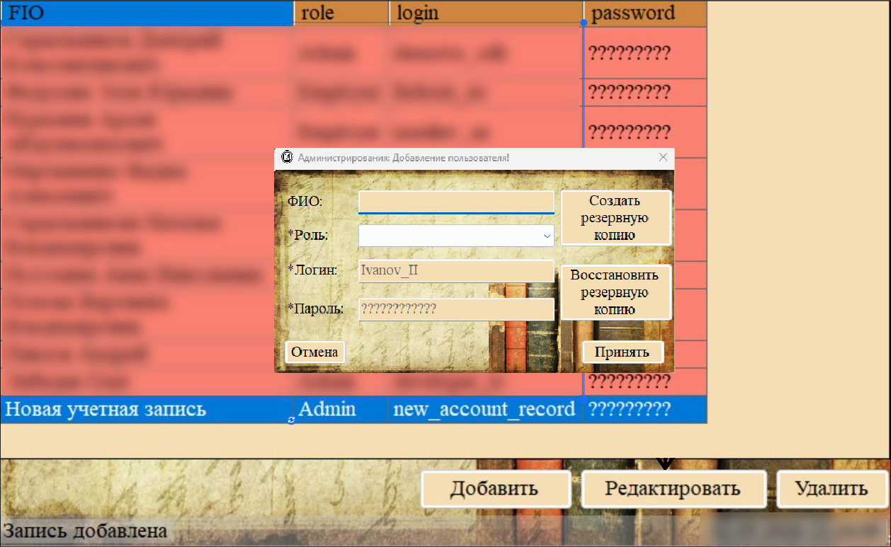
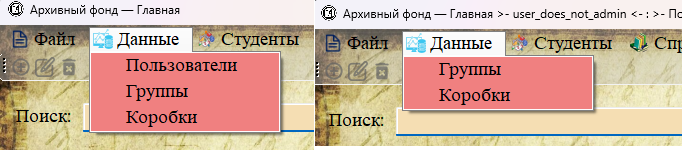
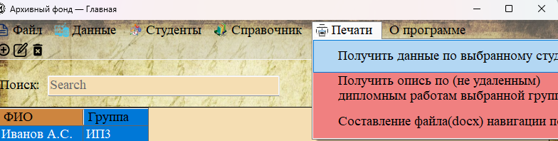
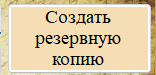
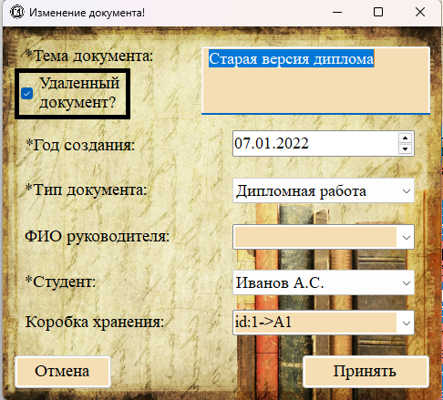
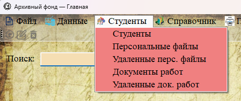
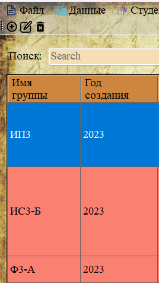
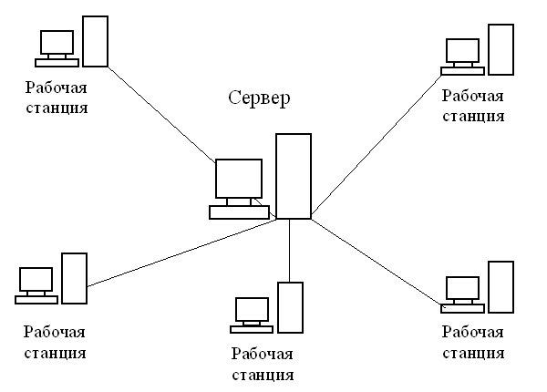

В этом разделе собраны ответы на наиболее часто задаваемые вопросы пользователей программы «Архивный фонд».
❓ Вопрос 1: Как войти в систему, если я забыл пароль?
Обратитесь к администратору системы. Только администратор может сменить пароль пользователя (раздел 3.1.4). Самостоятельно восстановить пароль невозможно, так как пароли хранятся в зашифрованном виде (хэш SHA-512).

Рис. 1. Сменить пароль может только администратор через форму редактирования пользователя
❓ Вопрос 2: Как добавить нового пользователя?
Нового пользователя может добавить только администратор. Для этого перейдите в раздел «Данные → Пользователи», нажмите кнопку «Добавить» и заполните форму (ФИО, роль, логин, пароль). Подробнее — в разделе 3.1.2.

Рис. 2. Форма добавления нового пользователя
❓ Вопрос 3: Почему я не вижу пункт меню «Пользователи»?
Пункт меню «Пользователи» виден только пользователям с ролью «Администратор». Если вы вошли как «Сотрудник», этот пункт будет скрыт. Проверьте свою роль у администратора.

Рис. 3. Слева — меню администратора, справа — меню сотрудника
❓ Вопрос 4: Как распечатать личное дело студента?
Выделите студента в разделе «Студенты», затем выберите в главном меню «Печати → Получить данные по выбранному студенту». Программа сформирует документ Word на основе шаблона. Подробнее — в разделе 2.5.1.

Рис. 4. Вызов печати личного дела из меню «Печати»
❓ Вопрос 5: Что делать, если не запускается программа?
Проверьте следующее:
— Установлен ли .NET Runtime (версия 6.0 или выше).
— Запущен ли сервер MySQL.
— Корректно ли заполнен файл config.ini (сервер, порт, логин, пароль, база данных).
— Есть ли в папке с программой файл ArchiveFund.06.clear.sql (он используется для создания базы данных).
❓ Вопрос 6: Как создать резервную копию базы данных?
Только администратор может создать резервную копию. Откройте форму управления пользователями (раздел «Пользователи» → «Добавить» или «Редактировать») и нажмите кнопку «Создать резервную копию». Подробнее — в разделе 3.2.1.

Рис. 5. Кнопка «Создать резервную копию» в форме управления пользователями
❓ Вопрос 7: Можно ли восстановить удалённый документ?
Да. Удалённые документы хранятся в разделе «Удалённые документы». При редактировании такого документа можно снять галочку «Удаленный документ?» и сохранить — документ вернётся в основной раздел.

Рис. 6. Снятие галочки «Удаленный документ?» для восстановления
❓ Вопрос 8: Как найти документы с истёкшим сроком хранения?
Перейдите в разделы «Удалённые персональные файлы» и «Удалённые документы». Именно там находятся документы, срок хранения которых истёк (личные дела — 75 лет, документы работ — 5 лет). Вы можете использовать поиск и фильтрацию для уточнения запросов.

Рис. 7. Разделы с удалёнными документами и личными делами
❓ Вопрос 9: Почему в таблице не отображаются столбцы с годами правильно?
В программе все поля с годами (год поступления, год отчисления, год создания документа) отображаются в формате «ГГГГ» (только год). Это сделано для удобства чтения и фильтрации. В базе данных эти значения хранятся как полноценные даты.

Рис. 8. Годы отображаются в формате ГГГГ
❓ Вопрос 10: Можно ли работать с программой на нескольких компьютерах?
Да. Программа использует серверную базу данных MySQL. Достаточно установить программу на каждом компьютере и настроить подключение к общему серверу баз данных в файле config.ini.

Рис. 9. Несколько клиентов подключаются к одному серверу MySQL